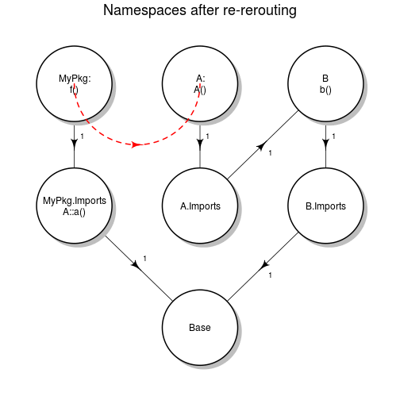

-
A dirty hack solution for packages using Depends
2013-05-27
SourceMotivation
As stated in the the "Writing R Extensions", the Software for Data Analysis book (aka the R bible), packages should whenever possible, to avoid name collision (masking) and ensure trustworthy computations. See this discussion on Stackoverflow.
The problem
So after adopting best practices, and only using Imports in my packages, the problem is that some packages imported do not follow the those best practices and rely on Depends for their dependencies, and consequently will not find unless hacked.
Say we are writing a package MyPkg, that uses some functions a CRAN package A, listing a CRAN package B in its Depends.
MyPkg::f
f <- function() a()A::a
a <- function() b()Executing
f()will find the function a, explicitly imported from package A. But executinga()will die because function b can not be found.analysis
Because B is in A Depends, usually
b()is found in the search path, where namespace B is attached. What can we do to work around this problem. Sadly, there is nothing we can do at the package MyPkg level, because the problem sits in the A namespace. We could of course lists B in the MyPkg Depends, but that is precisely what we want to avoid.the dirty hack solution
the idea
I suggest that you first have a look at this very good blog How R Searches and Finds Stuff if you need some clarification about namespaces and imports.
Here is a diagram of the current state of the problem:

We want the
a()call, which is executed in namespace A, to find the b symbol in namespace B. To achieve this, we will re-route the namespace A (actually its Imports namespace) to the B namespace:nsa <- getNamespace('A') nsa_imp <- parent.env(nsa) parent.env(nsa_imp) <- getNamespace('B')Now our namespaces should look like this:

the implementation
Just put the re-routing code in your MyPkg .onLoad function, defined usually in
R/zzz.R:.onLoad <- function(libname, pkgname) { nsa <- getNamespace('A') nsa_imp <- parent.env(nsa) parent.env(nsa_imp) <- getNamespace('B') }why dirty ?
First of all, it uses
parent.env<-, and according to the documentation:The replacement function parent.env<- is extremely dangerous as it can be used to destructively change environments in ways >that violate assumptions made by the internal C code. It may be removed in the near future.
It is a pity because it can proved extremely useful.
why a hack ?
Unfortunately it does not work in the general case. Suppose you need two packages A and D, that both depend on B and C, but with different rules:
A -> B -> C D -> C -> BIn that case, we would re-route A to B, then B to C. And this is incompatible with the way D is designed, resulting in wrong symbol picks if symbols with same name are both defined by B and C.
so what ?
We'll see in a future post a probably much better solution.
Karl Forner @ Quartz Bio